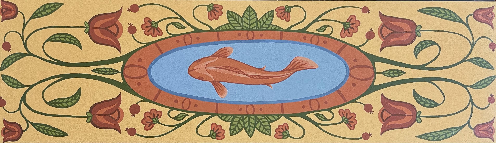
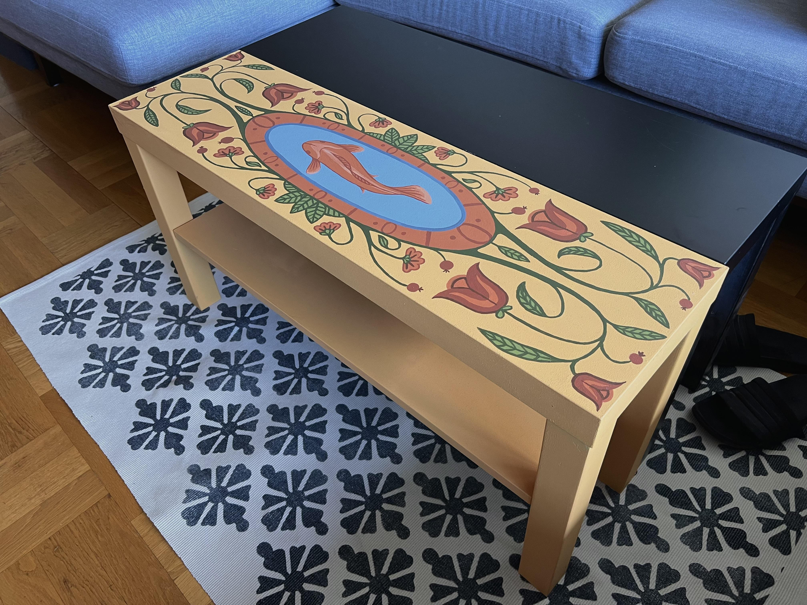
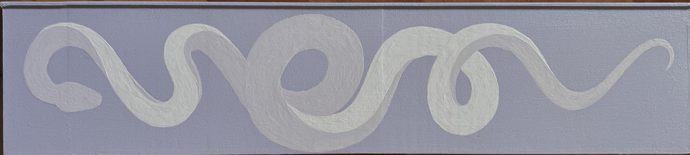
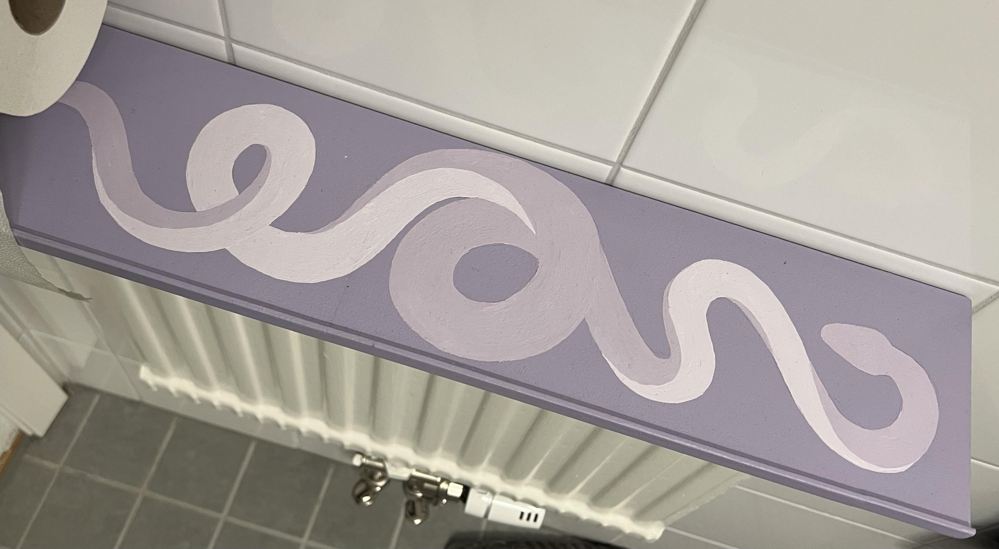
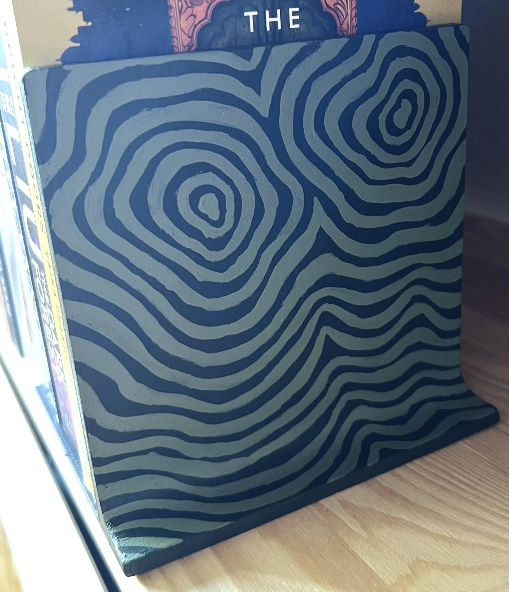
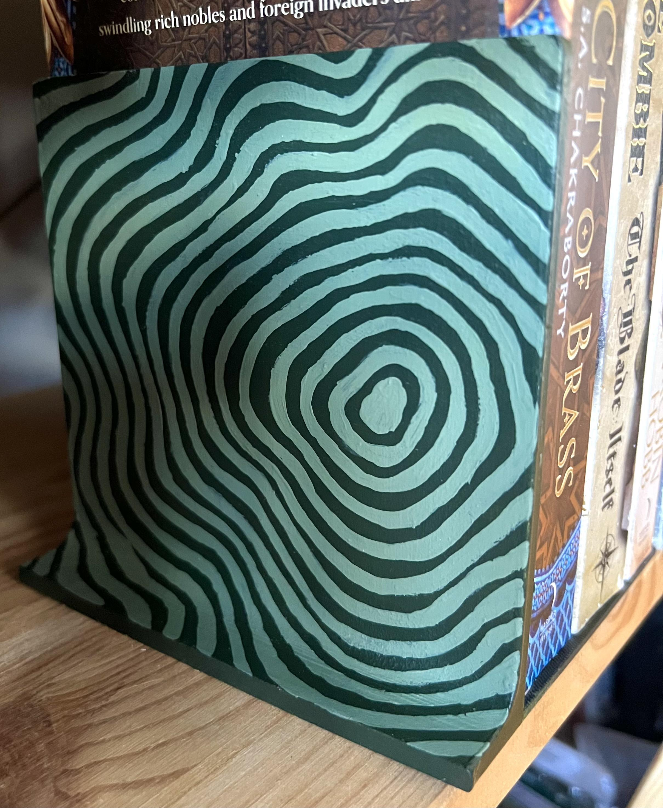
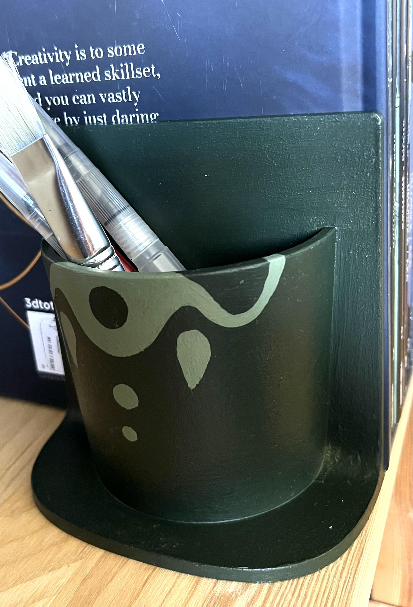
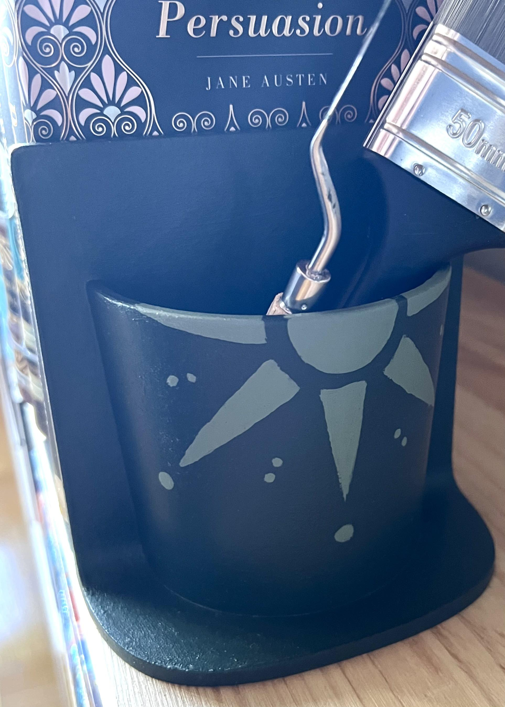

General information
All pieces are first sanded and primed with two layers of gesso. I have the cheap acrylic paints from Clas Ohlsson in primary colors, plus green and dark brown and I mixed all shades from these. All pieces are sealed with the matte indoor varnish from panduro.
Yellow fish coffee table
An IKEA Lack coffee table that was originally black.
 Lavender snakes bathroom shelf
This is a 3D printed shelf that goes over the radiator in our bathroom across from the toilet. Colors are more accurate on the right picture.
 Forest green book ends
Two pairs of 3D printed book ends, one with cup and one without per pair. The third picture (not-sun cup) is the most color accurate, but still slightly cool-toned.
   